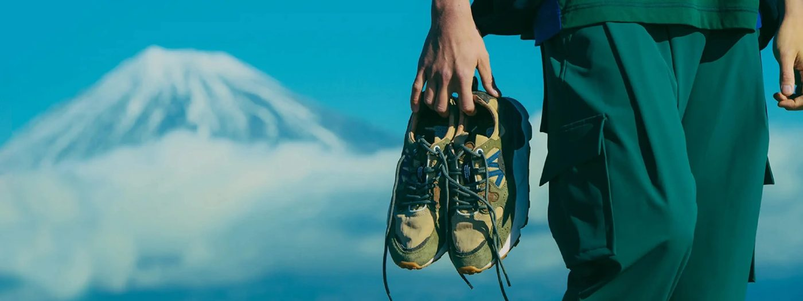
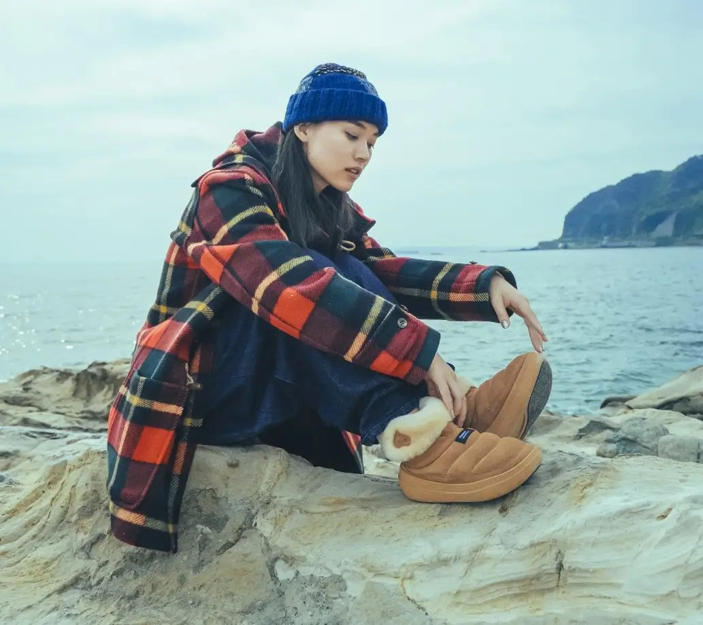
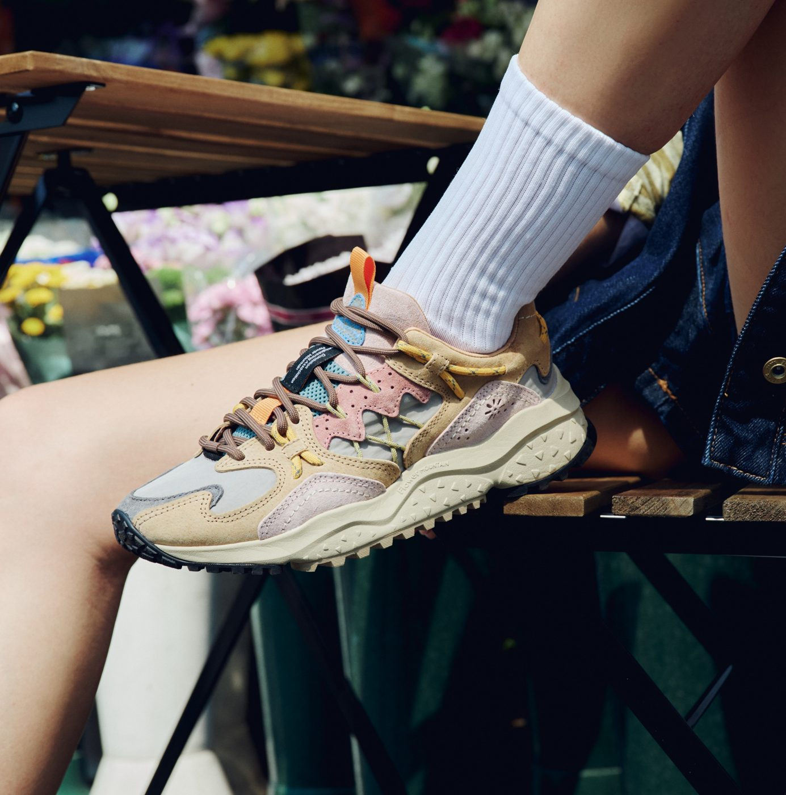
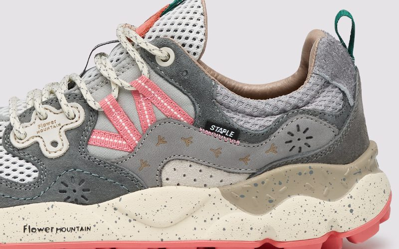
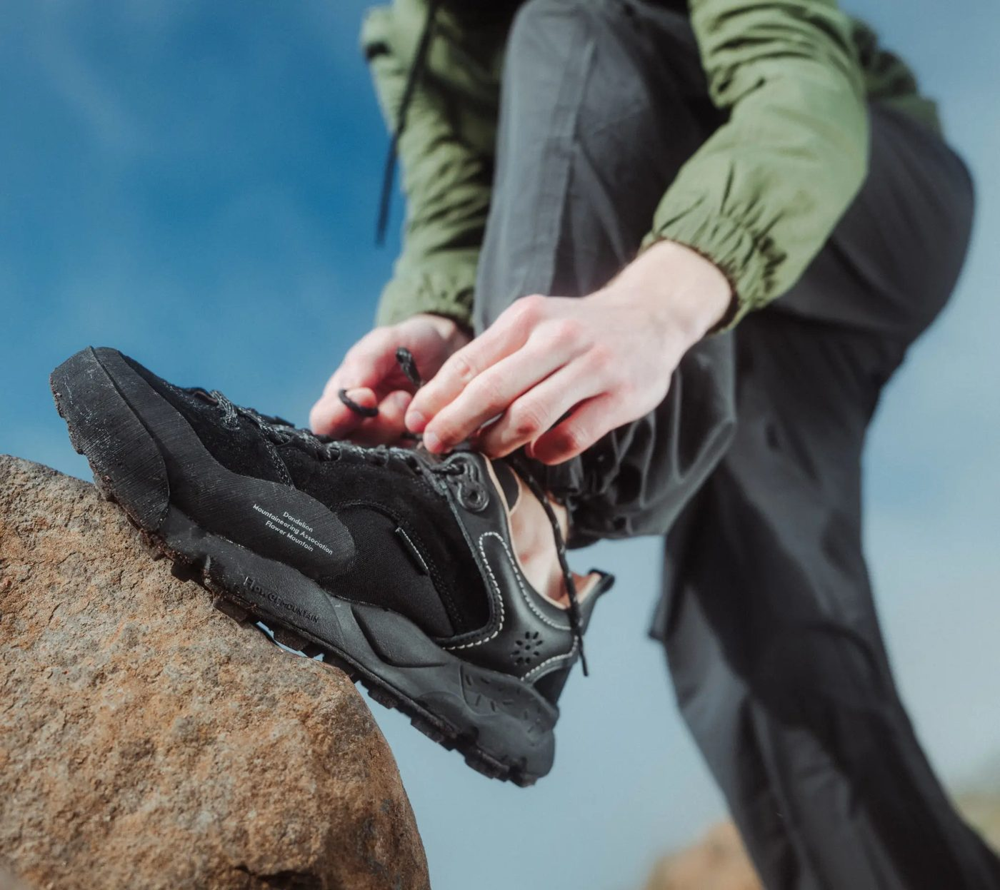
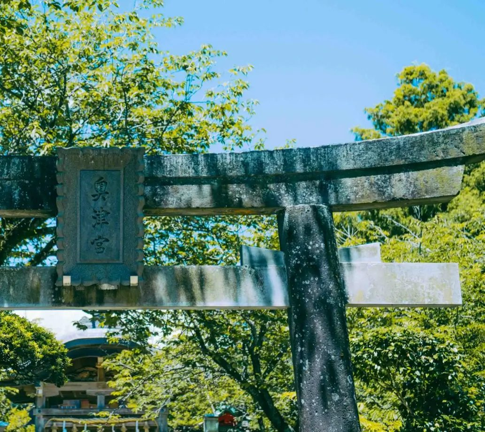
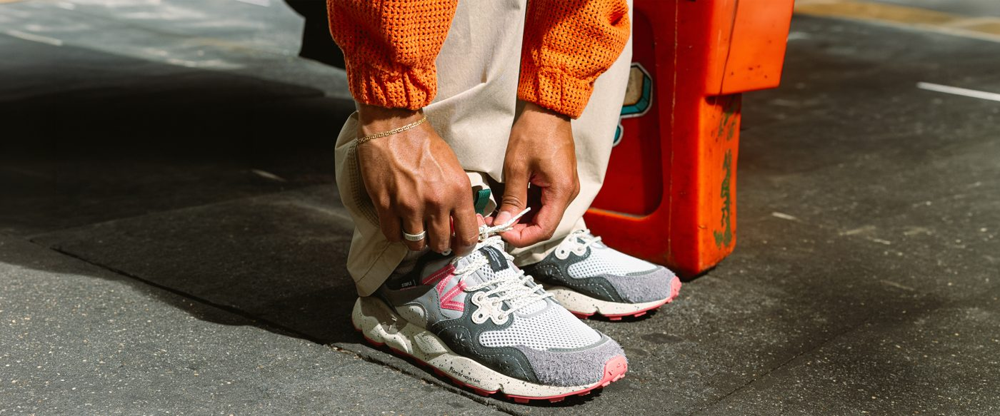

Visual study · mood board · brand series 05 · 2026-11-16
Flower Mountain
Visual study (mood board) of Flower Mountain, a trail and lifestyle sneaker brand with a Japanese design story: design, style and product-line colors from its website and campaign images (FW26 snapshot).
Mood
Mist, moss and sand under a Fuji sky. Earth-tone trail sneakers, built from suede and technical mesh, sit in Japanese shrine, coast and rock scenes, with pink and orange accents kept small. Premium outdoor-lifestyle footwear with a calm, craft-led tone.


(01)

(02)

(03)

(04)

(05)

(06)

(07)Palette, measured from the images
#D6E6E6#0F1218#CEC8BA#91BDD0#919A89#616A67Product-line colors (snapshot 2026-11-16, FW26)
Counts, 188 products. Earth 94 (50%), neutral 62 (33%), muted rose and violet 13, deep navy and burgundy 13, pastel 4, bright 2. By status: core 108, new-in 47, sale 33. Earth leads in every status; neutral is 36% of core and 28% of new-in.
Names as sold, top families. Brown 37, beige 36, gray 34 (plus dove, dark, light and charcoal gray 22), pink 22, green 18, navy 18. 65 names (35%) carry an accent hue (pink, fuchsia, orange, yellow, violet, light blue), yet only 2 measured uppers are bright: accents sit in laces, panels and soles.
By collection. Women 31: earth 21, neutral 6. Men 25: earth 13, neutral 9. Kids 24: earth 9, neutral 7, muted 5. Accessories and apparel 23: neutral 10, earth 7, pastel 3. Capsules 32: earth 16, neutral 13. Full table: the note and Flower Mountain product colors.csv.
Interpretation, not a verdict. Steady earth and neutral fits the Agent 1 report 2026-11-07 (neutrals steady). WGSN and Pantone were not checked here; Agent 1 owns the trend call.
Visual themes
01 Japanese trail. Key motifs: Mount Fuji, torii gate, rock, forest light. Sub motifs: dandelion logo, hands lacing shoes, worn trail shoes held up.
02 City meets mountain. Key motifs: steps, street, coast, orange and red clothing. Sub motifs: Staple collab streetwear, plaid coat, sock and sneaker crops.
03 Studio side profile. Key motifs: one shoe, left-facing, flat lavender-gray ground. Sub motifs: speckled cream midsole, toothed tread, lace accents.
04 Soft earth range. Key motifs: taupe, beige, brown, army green, dove gray. Sub motifs: pink, fuchsia, orange and yellow as small trims.
Brand colors (site and CSS)
Interface (fact, CSS read 2026-11-16). https://www.flowermountain.com/theme/ca2e5aacfd28fd475a15c23b0a425be8/css/all.css: primary black #000000, secondary #666666, dark #4A545B, light #EEEEEE, white. Semantic colors are Bootstrap-style defaults: success #007E4E, info #055DD4, warning #E1AD01, danger #FF0000. Kept apart from product colors.
Product ground (measured). Studio images sit on a flat lavender gray, #E5E3E6 in 132 of 188 images (variants #E6E4E7, #E8E3E9); apparel on #F6F6F6.
Campaign (measured). Mist, sky blue, moss and slate green from the Fuji and shrine images; the Staple capsule adds charcoal gray, dusty coral and orange (site text: Staple's signature hues). Overlap: the product earth range matches the moss, sand and slate of the campaign images; the interface stays black and white.
Hero material
Fact. The Yamano 3 page describes a technical fabric upper with suede inserts and perforations, trekking laces, a cork insole and an ultra-light rubber sole with a toothed tread (https://www.flowermountain.com/us_en/yamano-3-man-suede-and-technical-fabric-sneakers-grey-blue, retrieved 2026-11-16). The brand text cites Japanese fabrics and artisanal craft (https://www.flowermountain.com/us_en/our-world/).
Interpretation. The look is open mesh paired with brushed suede panels, on a speckled cream foam midsole with a contrast outsole. Close-up at (04).
Visual elements
Photography. Natural-light outdoor scenes with a blue sky and green; street shots with saturated orange; studio shoes at side profile on lavender gray.
Type and graphics. Bold sans caps for collab titles and the season label; a dandelion logo; small woven and printed labels on tongue and heel.
Layout habits. Wide banners, 4-up product grids, model pages and style tabs (Performance, Lifestyle); one product per tile.
Detail. Perforated suede flowers, trekking lace loops, speckled midsole, pull tab in a contrast color.
Visual story
Fact (home page, https://www.flowermountain.com/us_en, retrieved 2026-11-16): Staple collab banner, new collection FW26 (Lifestyle and Performance), Yamano 3 and Yamabushi carousels, collab and project tiles, then the Japanese-vision story. Interpretation: collab first, models second, heritage last.
Notable products
Yamano 3 (Man, Woman, Uni, Junior). 86 of the 188 products; the core model carries the mesh and suede look.
Yamabushi. 18 products; a heavier trail form in green, brown and gray.
Iwano 2. 12 products; the model shown on the Performance style pages.
What we can learn
Keep the base earth and neutral, and spend color in small parts (laces, pull tab, outsole) so the range reads calm and still shows a signature. A flat, one-tone studio ground lets 188 colorways read as one family. Worth a deeper look later (not started): the mesh and suede upper construction; the speckled midsole; perforation patterns. A material specialist and reverse engineering are candidates only.
Pages read (2026-11-16)
Home; Men; Women; Sale Men; Sale Women; Accessories; Children; Men Performance and Lifestyle styles; Women Performance style; Men and Women Yamano 3 models; Women Yamabushi; Projects; Staple, Raised by Wolves and 10th Anniversary capsule collabs; Our World; product pages: Yamano 3 Man, Tote Bag, Kafu-One. All under https://www.flowermountain.com/us_en/.
Method and limits
Palette basis. board images (01), (02), (03), (05), (06), (07) and the close-up (04); six clusters kept. Interface colors from the site CSS are listed separately in the section Brand colors
Limits. Snapshot 2026-11-16, FW26 label. /products.json is not available (the site is not Shopify; /us_en/products.json returned 404), so colorway names were read from the product titles on the listing pages (title attribute and product data). 188 products were found on the home page and 17 listing and collection pages; every one was measured from the 498 px listing image. Only 3 product detail pages were read (Yamano 3 Man, Tote Bag, Kafu-One T-shirt). Fiber and material percentages were not read. Hex values are the dominant upper color measured from a flat-lit studio image (a k-means cluster of the shoe upper; sole and shadow excluded; true color is approximate and lighting varies); the second cluster is in the secondary hex column of the CSV only. Status is inferred, the site shows no new-in badge: sale = on the Sale pages; new-in = on the home page or in the project capsules; core = only on the men, women, style, accessories or kids pages. Per-product season is not shown, so FW26 is the site's collection label, not a verified season per item. Colorway names as sold mix English and Italian on the US site (for example Marrone-Verde-Cognac). robots.txt (https://www.flowermountain.com/robots.txt, 2026-11-16) carries Content-Signal ai-train=no: images are kept as private study references only. Not checked: store locator, customer-service pages, the Harmony of Traditions, Universal Works, Nicholas Daley, Bellerose and Barbour collab pages, price history, and the other country sites. The board builder cannot draw swatches on page 2, so the product-line color row is text with counts; the swatch row is a tool gap for the Owner. Candidates for a later deeper look only (not started): the technical-mesh and suede upper construction, the speckled foam midsole, perforated suede inserts.
Image credits
- (01) Hand holding worn trail shoes in front of Mount Fuji, Our World banner. source (file fm_our_world_banner_middle_2x, white band at the bottom trimmed)
- (02) Woman in red plaid coat and blue beanie on a coastal rock, Our World. source (file fm_world_6_desktop)
- (03) Sneaker on a seated leg with white sock, FW26 Lifestyle tile. source (file FW26-Lifestyle)
- (04) Close-up of mesh, suede and speckled midsole on the Staple Yamano 3 (cropped from the product image). source (file fal0012017818812b22-1)
- (05) Hands lacing a black trail shoe on a brown rock against blue sky, Our World. source (file fm_our_world_image_2x)
- (06) Stone torii gate framed by green trees and sky, Our World. source (file fm_world_2_desktop)
- (07) Man lacing a gray and coral sneaker on a street, orange jacket, Staple collab. source (file Banner 1)
Images are the brand's own, shown for study and reference only; each is listed above with its source page.